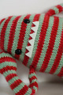

|
||
Premium Patterns Wintry Mix Mitts Love Bytes HawkeyeFree Patterns Kiddie Cadet Summerlin Ruffled Scarf Seamless DS Sock Simply Seamless Pouch Myriads of MushroomsExtras DIY Mitten Blocker Felt Patch Tutorial Yarn Dyeing Tutorial Needle Pouches Knitting Journal |
March 16, 2011 - Posted by Alice SchneblyMeet Gort.Meet Gort Project Specs I picked up this book on Amazon a few weeks ago, and it was the perfect cure for my knitting funk. As of late I hadn't been drawn enough to a pattern really make time to sit down and knit, but this cute collection of monsters (combined with Malabrigo March) was all I needed to get back into my groove. Though Grace has knit a few of Rebecca's other monster patterns, this guy is my first. I love how even though the designs are so simple they have so much personality! Gort jumped out at me as a good first monster--it's one of the easier patterns, and I could choose from my stash of partial balls of Malabrigo so it would be a perfect stash buster. The knitting went by quickly, and the only thing I really had to think about was the striping. I didn't do any special striping techniques, so there's a slight jog at color changes. I admit it does bother me some but my laziness definitely got the best of me this time. I've already started a couple other monsters from the book--what can I say, they're super addictive! I hope to share those with you later this week! If you're interested in knitting up some monsters (or any other stuffed toy pattern), it's not too late to come join us in the Monster & Stuffed Toy Malabrigo March Knit-a-long. Lots of cute monsters have already been knit so be sure to stop by and check them out for inspiration! I also wanted to mention that Grace is hosting a giveaway in her Mr. Yarn Ravelry Group. All you have to do is post a photo of your finished Malabrigo March project in this thread, and she'll draw from all the entries and give away a few skeins of free Malabrigo Yarn and $20 Mr. Yarn gift cards! All projects are welcome whether or not you bought the yarn at Mr. Yarn! |
   Recent ReviewsRecent Posts
 Our Favorites
|
| © 2007 KathrynIvy.com | ||
{kind=link}
{kind=link}